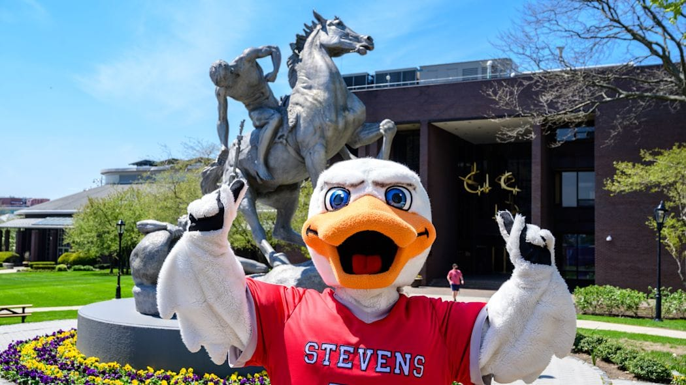
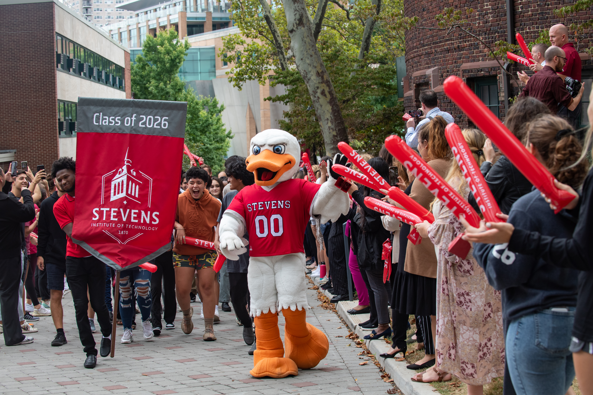

Some students or people in general can find that sticking to tasks, goals, or maintaining some sort of progress is difficult. Examples include studying, taking a walk, or completing an assignment. It is very easy to lose the motivation when you cannot see your progress towards the end goal.
The StevensHabitTracker will help you with that. It will give the average user a way to see their daily progress and accomplishments. This will help them build good habits and be consistent.
